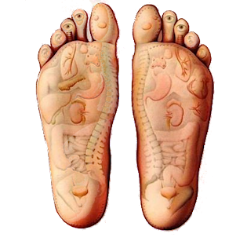
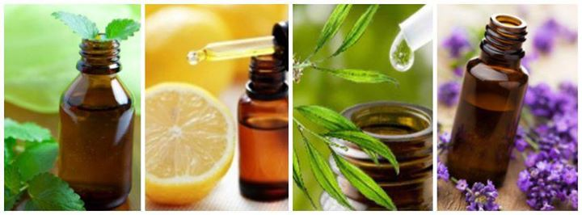

welkom
Afspraken
Afspraken
overzicht
Afspraak maken
Afspraak
aanpassen
Afspraak
verwijderen

Voetreflex
Voetreflex is een eeuwenoude natuurgeneeswijze die nog niets aan
kracht heeft verloren. De voeten weerspiegelen ons lichaam op
perfecte wijze, en laten zien waar blokkades en spanningen zijn te
vinden. Door die (druk)punten te masseren, geef je het lichaam als
het ware een zetje om de onbalans te doorbreken. Het zelfgenezend
vermogen krijgt weer de ruimte.
Van de voetzolen, tenen en wreef is veel af te lezen: allerlei
problemen met organen, klieren, zenuwen en spieren. Maar ook
problemen met voeding, of het verwerken van emoties. Voetreflex is
een zachte, ontspannende therapie die uitstekende resultaten geeft na
een ziekte of ongeval waarbij de lichaamsfuncties verstoord zijn
geraakt. Bij bijvoorbeeld slecht slapen, hoofdpijn of een zwak
immuunsysteem kan de voetreflex helpen om de balans te herstellen.
AromaTherapie
AromaTherapie is een bijzondere massage met acht essentiele olien.De
zachte en effectieve behandeling vermindert stress en geeft een boost
aan je immuunsysteem. De AromaTouch techniek combineert het masseren
van meridiaanpunten op de rug en voeten met het toepassen van zuivere
en dus krachtige essentiele olien die diep in het lichaam hun werking
doen. De massage kent vier onderdelen: stressvermindering,
immuunversterking, vermindering van ontstekingsreacties en tenslotte
homeostase.
